The summit climb of Kedarkantha is a very rewarding one. Right from the base camp of the trek, the summit looms large. As you start your trek in the early hours of the morning and steadily climb up the steep slope of snow, the world opens up around you. Outside the summit, the trek is also unique for its beautiful clearings. Very rarely you will find stunning clearings on a trek that makes way for some rest spots and beautiful campsites. This trek is filled with clearings on all the different routes
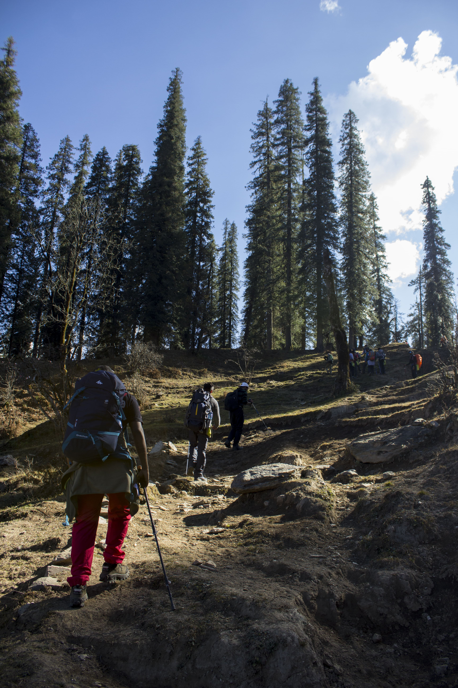
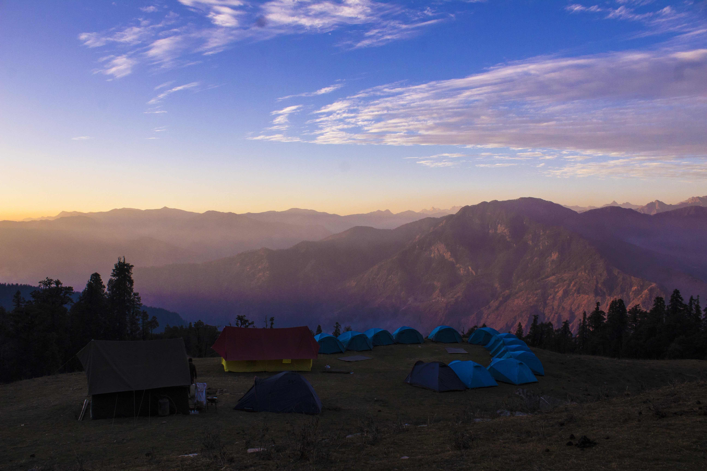

 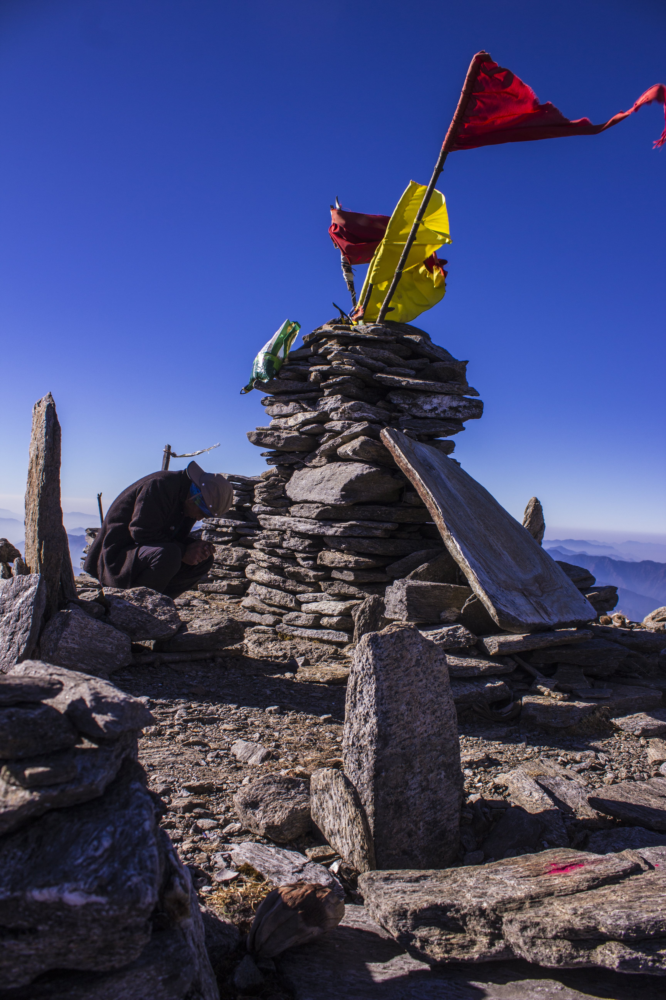
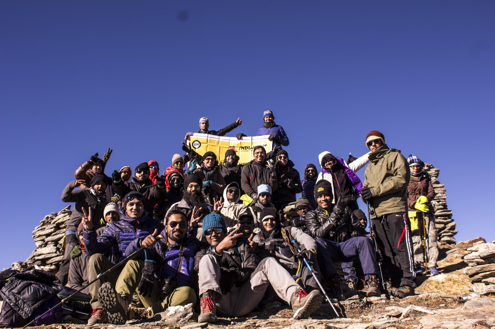
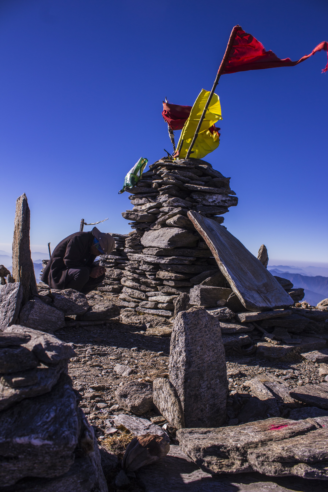
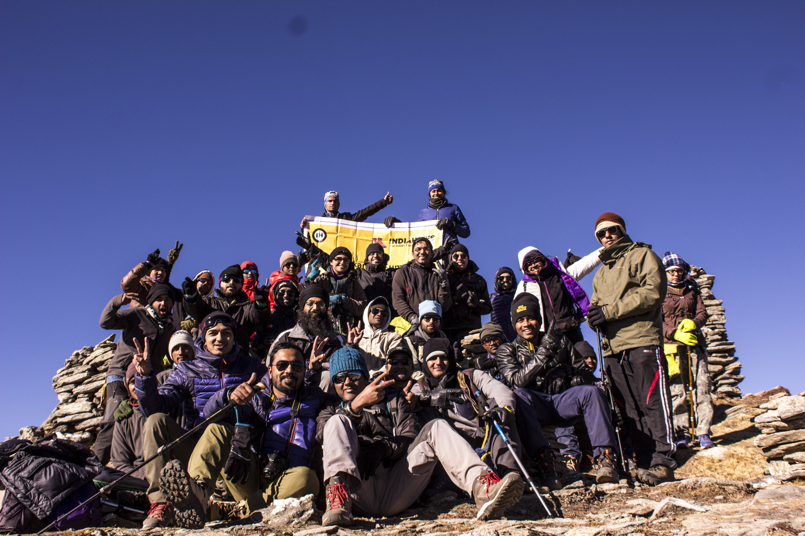
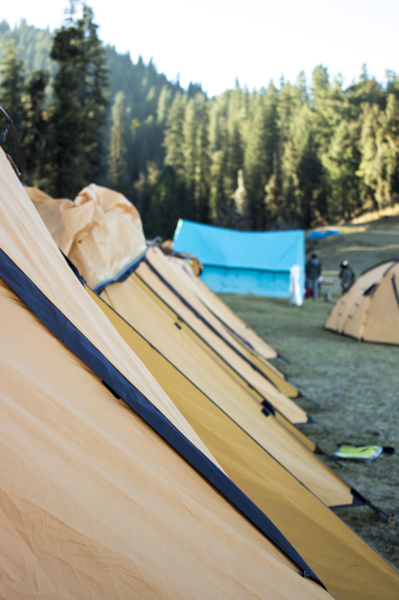
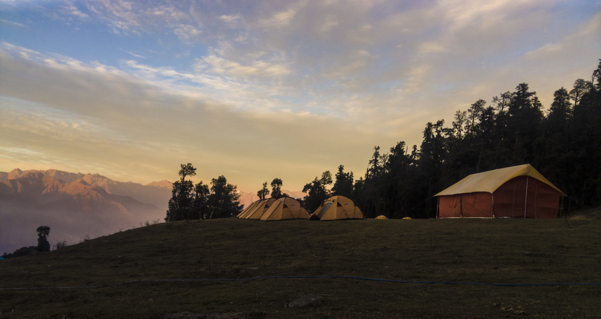

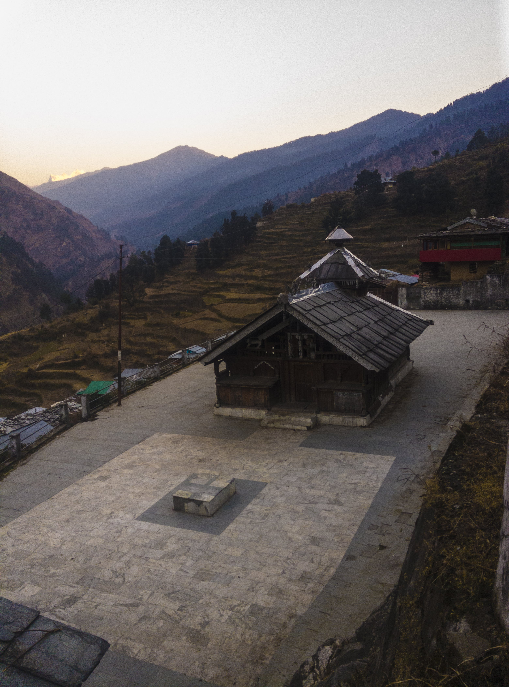
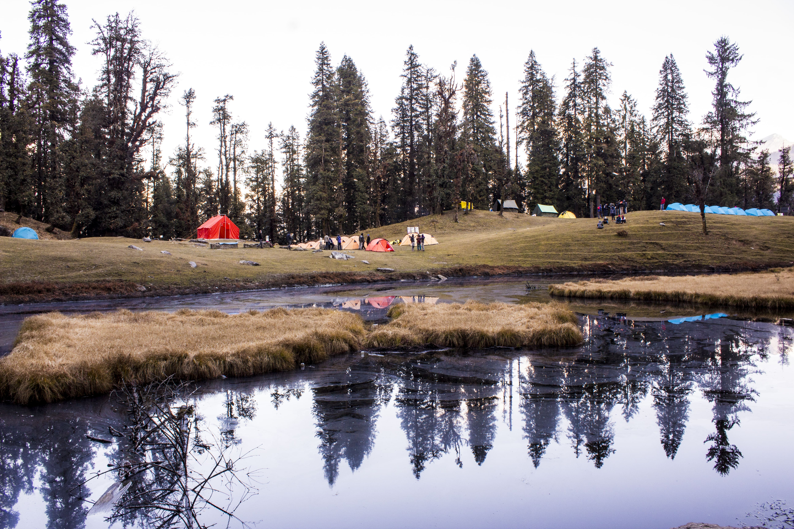
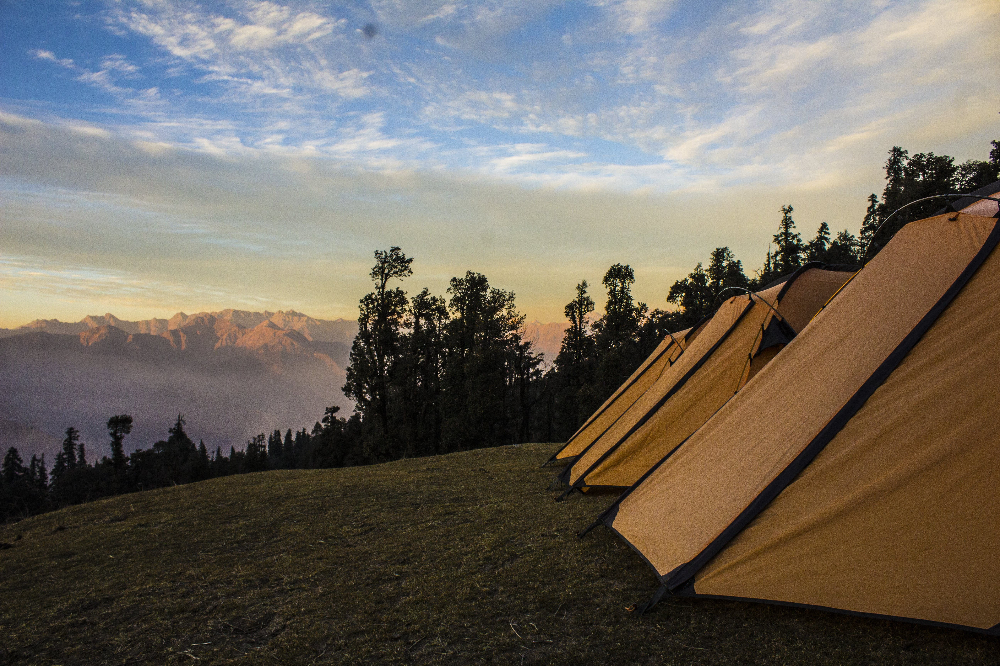